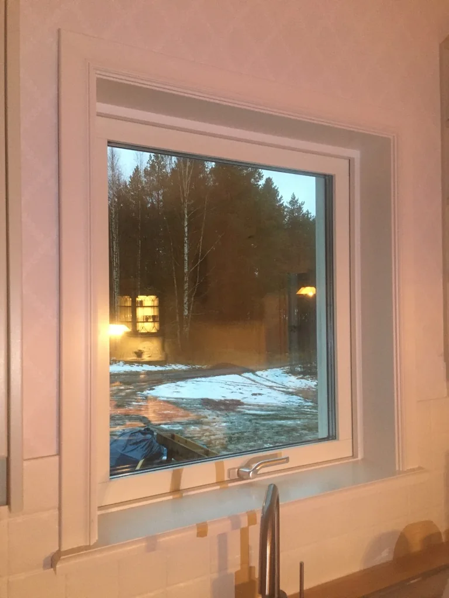

Fönsterbyte
Ljusinsläpp med omsorg om detaljerna.
EJB Byggentreprenad
Ljusinsläpp med omsorg om detaljerna.
Vi hjälper till från mätning och beställning till montering. Ett fönsterbyte handlar också om detaljerna runt omkring, så vi går igenom hela arbetet innan vi börjar.
- Mätning och rådgivning
- Hjälp med beställning
- Montering
- Färdiga detaljer runt fönstren
